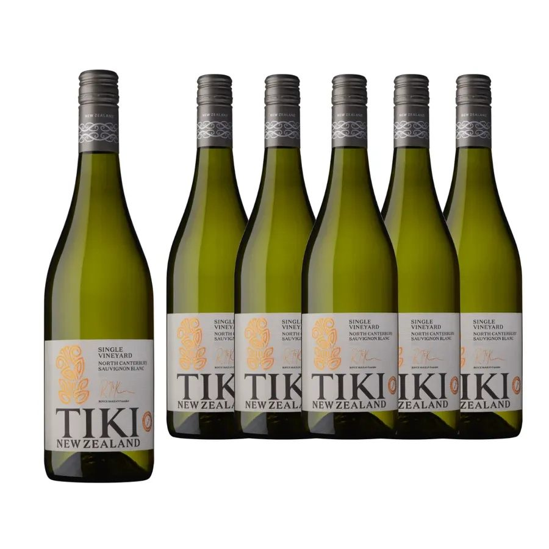
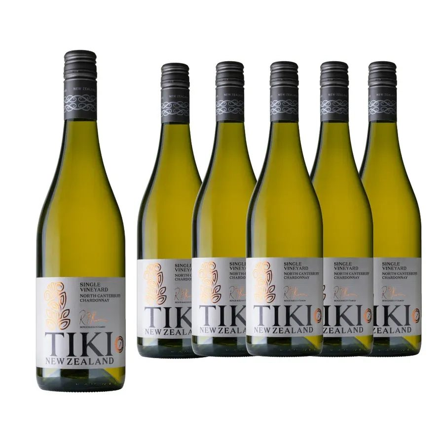
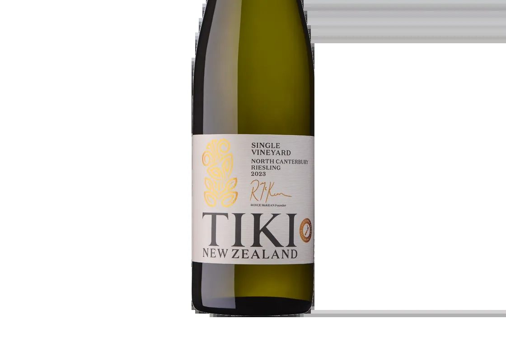

뉴질랜드 와인 추천 티키 소비뇽블랑, 샤도네이, 리슬링
뉴질랜드 마오리족의 헤리티지를 품고 탄생한 티키(Tiki) 와이너리는 지구상에서 가장 청정한 와인 산지 중 하나인 뉴질랜드의 테루아를 정직하게 표현하는 생산자입니다. 와이너리의 이름인 티키는 마오리 신화에서 인류를 창조한 신의 이름이자, 행운과 수호를 상징하는 마오리족의 전통 조각상에서 유래했습니다. 대지에 대한 존중과 친환경 농법을 바탕으로 순수한 과실미를 극대화한 티키 와이너리의 대표 화이트 3종, 소비뇽 블랑, 샤도네이, 리슬링의 각기 다른 매력을 차례대로 소개해 드립니다.
뉴질랜드의 순수한 자연을 담다, 티키 와인 화이트 3종
뉴질랜드 마오리족의 헤리티지를 품고 탄생한 티키(Tiki) 와이너리는 지구상에서 가장 청정한 와인 산지 중 하나인 뉴질랜드의 테루아를 정직하게 표현하는 생산자입니다. 와이너리의 이름인 티키는 마오리 신화에서 인류를 창조한 신의 이름이자, 행운과 수호를 상징하는 마오리족의 전통 조각상에서 유래했습니다. 대지에 대한 존중과 친환경 농법을 바탕으로 순수한 과실미를 극대화한 티키 와이너리의 대표 화이트 3종, 소비뇽 블랑, 샤도네이, 리슬링의 각기 다른 매력을 차례대로 소개해 드립니다.
뉴질랜드의 청정 자연과 마오리 문화의 깊은 헤리티지를 담아낸 와이너리,
티키(Tiki) 와인 화이트 3종


PART 1. 티키 Estate 소비뇽 블랑 (Tiki Estate Sauvignon Blanc)
뉴질랜드 와인의 대명사이자 말보로 지역의 청량하고 화사한 에너지를 고스란히 담아낸 화이트 와인입니다.
생산지 : 뉴질랜드 > 말보로 (Marlborough)
품종 : 소비뇽 블랑 100%
알코올 도수 : 13.0도 내외
와인 스타일 지표
당도 : 1점 (5점 만점 기준, 잔당감 없이 깔끔하고 청량하게 떨어지는 드라이 스타일)
바디 : 2점 (5점 만점 기준, 입안을 가볍고 산뜻하게 스치는 라이트 미디엄 바디)
산도 : 4.5점 (5점 만점 기준, 침샘을 기분 좋게 자극하는 생동감 넘치고 짜릿한 산미)
전문가 테이스팅 노트
잔을 채우는 투명한 연둣빛 컬러부터 신선한 에너지가 전해집니다. 코끝을 대면 뉴질랜드 소비뇽 블랑 특유의 패션프루트, 구아바, 망고 같은 열대 과일의 화사한 아로마가 폭발적으로 피어오르며, 싱그러운 잔디와 잘 익은 라임의 시트러스 향이 겹겹이 층을 이룹니다. 입안에서는 톡 쏘는 산미와 함께 맑은 미네랄리티가 단단한 뼈대를 이루어 지루할 틈 없는 깔끔한 피니시를 선사합니다.
추천 포인트 및 페어링
야외 테라스나 홈파티의 시작을 알리는 식전주로 매우 훌륭합니다. 신선한 연어 샐러드, 레몬을 곁들인 석굴이나 해산물 플래터, 혹은 매콤달콤한 태국 요리나 치즈 플래터와 매칭하시면 와인의 산미가 입안을 완벽하게 리프레시해 줍니다.

PART 2. 티키 Estate 샤도네이 (Tiki Estate Chardonnay)
싱그러운 과실미 뒤로 정교한 볼륨감과 부드러운 질감의 밸런스가 돋보이는 웰메이드 샤도네이 와인입니다.
테크니컬 데이터 생산지 : 뉴질랜드 > 하크스 베이 또는 말보로 (소노마 등 타 산지와 무관한 뉴질랜드 청정 지역)
품종 : 샤도네이 100%
알코올 도수 : 13.0도에서 13.5도 내외
와인 스타일 지표
당도 : 1점 (5점 만점 기준, 달지 않고 깔끔하게 떨어지는 드라이 와인)
바디 : 3점 (5점 만점 기준, 적당한 볼륨감과 리치함을 갖춘 미디엄 바디)
산도 : 3.5점 (5점 만점 기준, 과실의 볼륨감을 지루하지 않게 받쳐주는 기분 좋은 산미)
전문가 테이스팅 노트
은은한 황금빛이 감도는 맑고 투명한 컬러를 띱니다. 레몬, 청사과, 잘 익은 백도의 아로마가 은은하게 피어오르고, 뒤이어 가벼운 멜론의 힌트와 오크 숙성에서 오는 은은한 부드러움이 복합미를 더합니다. 입안에서는 소비뇽 블랑보다 조금 더 묵직하고 매끄러운 텍스처를 보여주며, 과실 고유의 청량한 산미와 둥근 질감이 훌륭한 균형을 이루어 부드러운 피니시로 마무리됩니다.
추천 포인트 및 페어링
어느 한쪽으로 치우치지 않는 밸런스를 지녀 다양한 음식과 두루 잘 어울립니다. 노릇하게 구운 생선구이, 해산물 크림 파스타, 부드러운 치킨 샐러드는 물론이고 가벼운 가금류 요리와도 밀리지 않고 우아한 마리아주를 보여줍니다.

PART 3. 티키 Estate 리슬링 (Tiki Estate Riesling)
이국적인 아로마와 정교한 미네랄, 그리고 치명적인 산미의 앙상블을 보여주는 숨은 보석 같은 화이트 와인입니다.
생산지 : 뉴질랜드 > 와이파라 또는 마content 산지 (New Zealand)
품종 : 리슬링 100%
알코올 도수 : 11.5도에서 12.0도 내외
와인 스타일 지표
당도 : 1.5점 (5점 만점 기준, 완연한 드라이 스타일이지만 리슬링 품종 특유의 잘 익은 과즙 풍미 덕분에 미세한 달콤함의 힌트가 느껴집니다)
바디 : 2점 (5점 만점 기준, 입안을 가볍고 투명하게 채우는 라이트 미디엄 바디)
산도 : 4.5점 (5점 만점 기준, 팽팽한 긴장감을 주는 세련되고 날카로운 산미)
전문가 테이스팅 노트
맑고 깨끗한 볏짚 색을 띱니다. 청사과, 자몽, 라임의 싱그러운 시트러스 향과 함께 은은한 아카시아 흰 꽃의 화사한 아로마가 아찔하게 번집니다. 리슬링 품종 특유의 페트롤 힌트가 과하지 않고 세련되게 녹아있어 복합적인 매력을 뿜어냅니다. 입안에서는 쨍하게 살아있는 산미와 정교한 미네랄리티가 단단하게 중심을 잡아주며, 새콤달콤한 과즙의 여운이 피니시까지 아주 길게 이어집니다.
추천 포인트 및 페어링
새콤하고 화사한 스타일을 즐기는 화이트 와인 애호가분들에게 단연 최고의 선택입니다. 신선한 스시나 사시미, 해산물 초밥은 물론이고 와인의 단단한 산미와 미세한 과즙미 덕분에 약간의 매콤한 양념이 가미된 한국식 해물찜이나 아시안 푸드와도 환상적인 궁합을 자랑합니다.
PART 4. 큐레이션 포인트: 뉴질랜드 대지가 선물한 세 가지 축복
티키 와인 화이트 3종은 뉴질랜드의 청정 테루아를 가장 직관적이고 정직하게 표현해낸 와인들입니다. 짜릿한 청량감과 열대과일 향을 원할 때는 소비뇽 블랑을, 부드러운 볼륨감과 편안한 밸런스를 원할 때는 샤도네이를, 그리고 이국적인 향과 쨍한 산미의 매력을 느끼고 싶을 때는 리슬링을 선택해 보세요. 마오리족의 전통 조각상이 새겨진 감각적인 라벨 스토리가 더해져, 소중한 분들과 함께하는 테이블 위의 시간을 더욱 풍성하고 즐겁게 채워줄 것입니다.
010-8078-7493 문자 주시면 가장 빠르게 안내해 드립니다.
이 글은 땡큐와인 네이버 블로그에 먼저 올린 글이에요.